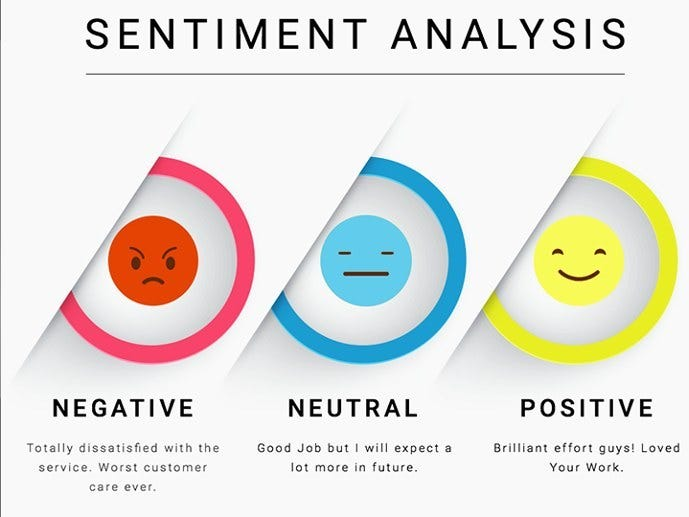

Hey, Everyone! I'm Navya, an ambitious data analyst with a dedication to unraveling the intricacies of data. Currently, I am pursuing a graduate degree
(Master of Science) in Applied Data Science at Syracuse University, building on my previous accomplishment of a graduate degree in Computer Science. This pursuit reflects my unwavering passion for data-driven insights and a commitment to continuous learning. I am eager to leverage my skills and education to contribute
meaningfully to the field of data analytics.

Wouldn't it be great to know the type of crime which may occur at a place given certain factors? This project performs just that! It demonstrates the usage of python with machine learning concepts in order to predict the type of crime.
I begin by performing exploratory data analysis on the Los Angeles Crimes dataset followed by the identification of key crime factors.
After this, I build models using the random forest algorithm and logistic regression. This project demonstrates my skills in python and machine learning.
Analysis of healthcare costs
Looking through the eyes of a healthcare management organization, the goal here is to identify trends,
patterns and areas for improvement by analyzing healthcare cost data. The steps involved in this project are, data cleaning, exploratory data analysis to identify key drivers of health care costs,
model selection & interpretation, and recommendations to reduce health care costs. This project demonstrates my skills in utilizing the R programming language to come up with effective solutions.

How simple would it be to have a database connecting tutors and their students! Tutor-base was designed to provide a simple solution for tutors and their students to avoid mixing up classes.
The system is designed to streamline the process of assigning and managing tutors for various courses. A student can request a tutor and a tutor can manage their assignments and availability.
Also, the higher-ups can monitor the rating and review of the tutors. This project demonstartes my ability to design and develop a database, and query it, using Transact SQL (T-SQL).
Sentiment Analysis using Naive Bayes and Logistic Regression

If you want to know how well a product/topic is doing in the market, you could use sentiment analysis. It is a field of study that uses computational methods to analyse the emotional tone of digital text.
In this project, I make use of the Sentiment140 dataset in order to build two sentiment analyzers, one which uses Naive Bayes and the other which uses Logistic Regression.
This project showcases my ability to make use of python in order to come up with innovative solutions.